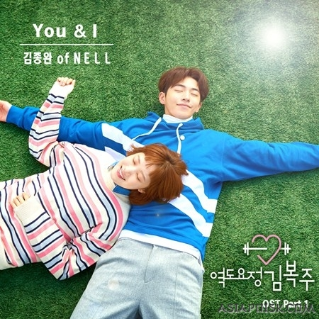

Фея тяжёлой атлетики

Жанр: Комедия, Спорт
Сериал: 16 серий
Сюжет:
Ким Бок Чжу родилась в семье спорстменов. Ее отец является чемпионом мира по тяжелой атлетике, поэтому девочка с детства отличалась небывалой физической силой. Малютка Бок Чжу была весьма упитанной девочкой, за что ее прозвали «толстушка». Но потом героиня занялась спортом и очень вытянулась, став настоящей красавицей. Только вот своя внешность и парни ее не волнуют, все о чем она мечтает — добиться высот в тяжелой атлетике.
Однажды Бок Чжу встречает красавца доктора Чон Дже, и по уши в него влюбляется. С этого момента девушка начинает менять свое представление о женственности и старается всячески привлечь внимание мужчины. В это же время она встречает друга детства Чон Чжун Хена, который является младшим братом Чон Дже. Парень с первой минуты влюбляется в похорошевшую Бок Чжу и пытается добиться ее расположения.
ВНИМАНИЕ!
Сайт сделан с любовью!